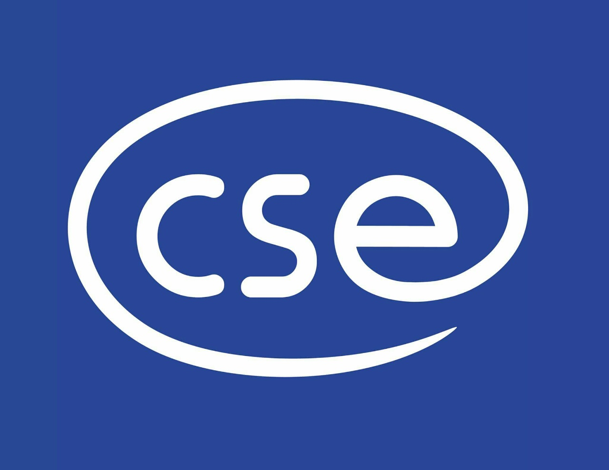

Lời chào mừng
Chào các cô giáo, thầy giáo, anh chị và các bạn ghé thăm trang web của Khoa CNTT!
Năm 2001, lãnh đạo Bộ Nông nghiệp & PTNT, lãnh đạo trường Đại học Thủy lợi khi đó đã nhận ra xu hướng và cơ hội của ngành Công nghệ thông tin (CNTT) trong tương lai, đồng thời cũng do nhu cầu bức thiết về đội ngũ kỹ sư công nghệ thông tin trong ngành và toàn xã hội, khoa CNTT được thành lập ngày 19/11/2001 từ việc sáp nhập Trung tâm tin học và Bộ môn Toán học của trường. Kể từ khi thành lập, Khoa CNTT đã phát triển không ngừng. Bước trưởng thành quan trọng nhất được thể hiện qua sự đổi mới, kiện toàn chương trình đào tạo. Bắt đầu từ năm 2007, Khoa đã tập trung thực hiện việc chuyển đổi toàn bộ chương trình, giáo trình đào tạo, thiết kế theo cùng ngành của trường ĐH Michigan- Hoa kỳ. Riêng các môn Toán được thiết kế dựa vào chương trình đào tạo của học viện Kỹ thuật MIT - Hoa Kỳ. Từ năm 2015, Khoa tạo bước ngoặt cả về nghiên cứu, đào tạo, xây dựng cơ sở vật chất và phát triển đội ngũ. Khoa mở rộng quy mô tuyển sinh cho cả đại học và sau đại học trên 450 chỉ tiêu mỗi năm, với những điểm nhấn quan trọng sau:
Về đội ngũ, Khoa có 60 giảng viên trực tiếp tham gia giảng dạy, trong đó có 20 Tiến sỹ và 12 nghiên cứu sinh với năng lực công bố quốc tế tốt. Phần lớn các Tiến sỹ của Khoa đều tu nghiệp tại nước ngoài có nền khoa học tiên tiến về CNTT, các giảng viên còn lại của Khoa đều có trình độ Thạc sỹ.
Về đào tạo, Khoa có những thay đổi lớn trong thời gian qua về quy mô, chương trình đào tạo có tầm nhìn và đáp ứng yêu cầu thị trường việc làm trong và ngoài nước. Hiện Khoa có 3 ngành đào tạo bậc đại học là Công nghệ thông tin, Hệ thống thông tin, Kỹ thuật phần mềm; một chuyên ngành bậc sau đại học là Công nghệ thông tin. Khoa luôn cập nhật sách và giáo trình mới nhất, đang được nhiều trường đại học uy tín trên thế giới sử dụng, các bài giảng đều cung cấp trực tuyến cho sinh viên. Các chương trình do công ty Samsung toàn cầu, FPT software đầu tư giúp Khoa đào tạo những sinh viên khá có cơ hội việc làm khi còn chưa tốt nghiệp.
Về NCKH và hợp tác quốc tế, Khoa đạt được nhiều thành tích cao, các thầy cô đã công bố trên 160 bài báo khoa học, trong đó chủ yếu là công bố quốc tế và có 47 bài thuộc danh mục SCI/SCIE. Các thầy cô trong Khoa chủ nhiệm và tham gia trên 10 đề tài cấp nhà nước và hàng chục đề tài nghiên cứu khoa học cấp Bộ. Khoa có những hợp tác quốc tế và giao lưu khoa học bền vững với các trường đại học uy tín của Mỹ (Delta University, Arkansas University, Colorado State University), Pháp (Paris 6, IRD, UMMISCO), Trung Quốc (ĐH Thâm Quyến, Viện công nghệ tiên tiến Thâm Quyến, ĐH Khoa học và công nghệ phương Nam), Nhật (JAIST, Nara Women's University), Úc (Griffith University, Deakin University, Monash University) theo các chương trình trao đổi hợp tác nghiên cứu, trao đổi giáo viên và sinh viên. Mục tiêu của chúng tôi là một tổ chức đào tạo CNTT tầm khu vực. Nhìn về phía trước, Khoa CNTT sẽ tiếp tục là nơi đào tạo uy tín với nền tảng cốt lõi về CNTT, hướng chuyên sâu về khoa học dữ liệu, trí tuệ nhân tạo. Chúng tôi tin tưởng rằng các sinh viên và giảng viên của chúng tôi sẽ là những yếu tố chính của sự thay đổi và giải quyết vấn đề trong thế giới hiện đại, luôn luôn mở và luôn luôn kết nối này. Kính mời các quý vị truy cập và khám phá trang web của Khoa chúng tôi, tìm hiểu thêm về các chương trình đào tạo đại học và sau đại học của Khoa, tìm hiểu về các hoạt động nghiên cứu và thành tựu của chúng tôi, tra cứu và xem thông tin giảng viên, sinh viên, và khám phá những kinh nghiệm phong phú của Khoa CNTT với chúng tôi.
